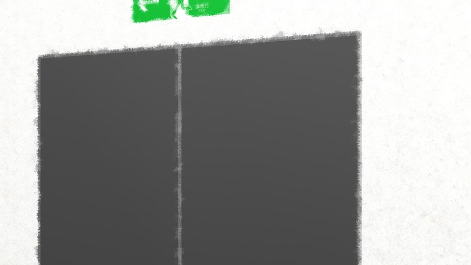

This scene is not unlocked yet in your progress
What I Can Do


This is something I only heard about, though.
What the local police saw first was a dazed, slumped-down Kogori-senpai.
What the local police saw first was a dazed, slumped-down Kogori-senpai.

Beside her, collapsed on the asphalt, Niimura-senpai.
An ambulance arrived along with the police, and my senpais were taken to a nearby hospital.
There was no one who looked like the culprit, and at the scene there were a car's skid marks.
It was conjectured that Niimura-senpai had probably been hit by the car the shinigami was riding in.
And yet, skid marks.
There was no one who looked like the culprit, and at the scene there were a car's skid marks.
It was conjectured that Niimura-senpai had probably been hit by the car the shinigami was riding in.
And yet, skid marks.

Kogori-senpai wasn't injured, but Niimura-senpai was in a state where every second counted.
Emergency surgery was performed, but the chances of saving her were low, I was told.
Emergency surgery was performed, but the chances of saving her were low, I was told.
Having arrived at the hospital, I was waiting in the waiting area with Kogori-senpai for the surgery to end.
Kogori-senpai didn't respond when I called to her, and just kept,
"Haruka... Haruka..."
murmuring it, as if delirious.
What had Kogori-senpai seen at the scene?
She must have seen the moment Niimura-senpai was hit, and the moment the culprit fled, too.
Kogori-senpai didn't respond when I called to her, and just kept,
"Haruka... Haruka..."
murmuring it, as if delirious.
What had Kogori-senpai seen at the scene?
She must have seen the moment Niimura-senpai was hit, and the moment the culprit fled, too.
"Because I said 'help me'...
If I hadn't told Haruka 'protect me'―"
Mumbling to herself in a small voice, Kogori-senpai had her gaze turned diagonally downward, staring somewhere with unfocused eyes.
"Kogori-senpai, it's all right. I'll be by your side the whole time."
Mumbling to herself in a small voice, Kogori-senpai had her gaze turned diagonally downward, staring somewhere with unfocused eyes.
"Kogori-senpai, it's all right. I'll be by your side the whole time."
"............
Goto..."
"Y-yes! What is it!?"
More than 4 hours had passed since Kogori-senpai was found, and at last she looked my way.
What had Senpai seen? What did Senpai know?
"Y-yes! What is it!?"
More than 4 hours had passed since Kogori-senpai was found, and at last she looked my way.
What had Senpai seen? What did Senpai know?
"Haruka, she... Haruka was...
attacked."
"B-by who!?"
"............ The shinigami."
"Shi...?"
I feel like Niimura-senpai said something like that on the phone.
But, it's obviously just that person in disguise.
"B-by who!?"
"............ The shinigami."
"Shi...?"
I feel like Niimura-senpai said something like that on the phone.
But, it's obviously just that person in disguise.

"The shinigami, it's Haruka's dad."
"Huh...?"
The answer that came back was different from my deduction.
Had Kogori-senpai lost her mind?
Or was she saying just what she had seen?
I didn't know what more I could say.
"Huh...?"
The answer that came back was different from my deduction.
Had Kogori-senpai lost her mind?
Or was she saying just what she had seen?
I didn't know what more I could say.

"Goto-chan, sorry about this... Keeping you with us this late.
Apparently, Kogori-san's mother will be here soon, from Motoki Police Station."
"Kogori-senpai's mother, just her?"
"Could you come over here for a moment?"
Maybe it was hard to talk in front of Kogori-senpai.
That made sense. Because, Niimura-senpai's mother...
"Kogori-senpai's mother, just her?"
"Could you come over here for a moment?"
Maybe it was hard to talk in front of Kogori-senpai.
That made sense. Because, Niimura-senpai's mother...
"Kogori-senpai, I'll be right back, okay?"
"Goto..."
"It's all right, I'll be right where Kogori-senpai can see me. That's okay, isn't it, Ojisan?"
"Yeah, we're only stepping away a little."
"............"
"Goto..."
"It's all right, I'll be right where Kogori-senpai can see me. That's okay, isn't it, Ojisan?"
"Yeah, we're only stepping away a little."
"............"


"As I thought... the culprit in this incident is..."
I had been thinking the whole time.
No matter what, I couldn't see Niimura-senpai's mother as anything but suspicious.
It contradicted what the only eyewitness, Kogori-senpai, had said, though...
I had been thinking the whole time.
No matter what, I couldn't see Niimura-senpai's mother as anything but suspicious.
It contradicted what the only eyewitness, Kogori-senpai, had said, though...

"The thing is...
Just now, Mifuyu Niimura-san's body was found...
Her house caught fire, and she was found as a burned body..."
No way! Suicide, because she thought she was cornered...?
But, for a suicide over being the culprit, it's baffling.
Leaving aside her daughter, Niimura-senpai, she left Kogori-senpai unharmed, and then suicide?
But, for a suicide over being the culprit, it's baffling.
Leaving aside her daughter, Niimura-senpai, she left Kogori-senpai unharmed, and then suicide?
From fleeing the scene to killing herself, it would have been about 4 hours, I suppose.
Then, timewise, it's entirely possible, but...
Then, timewise, it's entirely possible, but...
"Ojisan... that's strange, isn't it... Then what was the point of chasing my senpais around..."
"Yeah. If it was suicide, the reason she'd die is a complete mystery..."
If Niimura-senpai's mother is the culprit, her actions are far too inconsistent.
Is the culprit someone else... or was there a reason I can't understand...
"Yeah. If it was suicide, the reason she'd die is a complete mystery..."
If Niimura-senpai's mother is the culprit, her actions are far too inconsistent.
Is the culprit someone else... or was there a reason I can't understand...
So after all, the shinigami's true identity really is Niimura-senpai's father?
No, I don't believe that! It has to be a clever trick!
No, I don't believe that! It has to be a clever trick!
To begin with, considering Kogori-senpai's age and when Niimura-senpai's father died, it wouldn't be strange if she didn't remember his face.
So Kogori-senpai's testimony can't be relied on.
I still, after all, decide that the culprit is Niimura-senpai's mother.
So Kogori-senpai's testimony can't be relied on.
I still, after all, decide that the culprit is Niimura-senpai's mother.
A hypothesis, you decide on it and test it, and if there's a mistake, you just correct it.
A dead person being the culprit, that just isn't possible.
A dead person being the culprit, that just isn't possible.
"Keep the Mifuyu Niimura culprit theory just between us. I'm going to go search Mifuyu Niimura's home.
Goto-chan, sorry, but... please stay with Kogori-san."
"Of course. I meant to from the start. And..."
I straightened up, facing Ise-san.
"Of course. I meant to from the start. And..."
I straightened up, facing Ise-san.
"Assistant Inspector Ise. Thank you, truly, for all your running around for the people who are precious to me!"
I bowed my head as low as I could.
"No, it's wrong for you to thank me. I have to apologize. In the end, I was no help at all... On top of letting the culprit get away, even Niimura-san ended up like that... I'm truly sorry."
I bowed my head as low as I could.
"No, it's wrong for you to thank me. I have to apologize. In the end, I was no help at all... On top of letting the culprit get away, even Niimura-san ended up like that... I'm truly sorry."
With that, Ise-san left the hospital.
No, you truly did your best.
I'm grateful from the bottom of my heart.
I'm grateful from the bottom of my heart.

Then, as if trading places with him, Kogori-senpai's mother rushed in.
"Oh, Obasan! Kogori-senpai is safe!"
When I called out to her, Obasan stopped in her tracks and looked toward Kogori-senpai.
"Haah... thank goodness...! Really, thank goodness..."
Obasan let out a cry of relief.
"Oh, Obasan! Kogori-senpai is safe!"
When I called out to her, Obasan stopped in her tracks and looked toward Kogori-senpai.
"Haah... thank goodness...! Really, thank goodness..."
Obasan let out a cry of relief.
But,

"Haruka-chan, how is she!?
Mifuyu... what happened to her!?"
"Huh...?"
Right away, the color drained from her face again, and she shouted at me.
I felt an indescribable wrongness in Obasan's attitude.
It was only natural to worry about her longtime best friend, Niimura-senpai's mother, and her family, but...
"Huh...?"
Right away, the color drained from her face again, and she shouted at me.
I felt an indescribable wrongness in Obasan's attitude.
It was only natural to worry about her longtime best friend, Niimura-senpai's mother, and her family, but...
And at that moment, a certain hypothesis took shape inside me.
Truly without any grounds, a hypothesis.
Less a hypothesis than... a guess.
But if that's how it is... should I say this...?
Truly without any grounds, a hypothesis.
Less a hypothesis than... a guess.
But if that's how it is... should I say this...?
"Obasan..."
I stared straight into Obasan's eyes.
"............"
"............ ............!?"
I could see Obasan's expression changing before my eyes.
I stared straight into Obasan's eyes.
"............"
"............ ............!?"
I could see Obasan's expression changing before my eyes.
"Wh-what's wrong...?"
"You know, don't you? The reason something like this happened..."
"Goto-chan... that's..."
"You know, don't you? The reason something like this happened..."
"Goto-chan... that's..."
"Kogori-senpai and Niimura-senpai, could it be that they..."
When she heard me say that, Obasan let out a big sigh.
"Just what I'd expect... from Goto-chan... To get this far with only this much information..."
Unfortunately, it seemed my hypothesis had been right.
But... even so, when I thought about Kogori-senpai...
What on earth could I do...
When she heard me say that, Obasan let out a big sigh.
"Just what I'd expect... from Goto-chan... To get this far with only this much information..."
Unfortunately, it seemed my hypothesis had been right.
But... even so, when I thought about Kogori-senpai...
What on earth could I do...
"When I think about Kogori-senpai... I can't tell you what to do, Obasan, but..."
I fixed Obasan's face with a sharp glare.
"But... that's why... that's why I can't forgive you...!"
Obasan stayed silent, never taking her eyes off mine.
I fixed Obasan's face with a sharp glare.
"But... that's why... that's why I can't forgive you...!"
Obasan stayed silent, never taking her eyes off mine.
"You're right, what we did was wrong after all. That's why things came to this..."
So Obasan had made a mistake too...
Then I won't repeat the same mistake.
So... the thing I can do is...!
So Obasan had made a mistake too...
Then I won't repeat the same mistake.
So... the thing I can do is...!
"Then... then...!
Then, please turn yourself in!"
"............"
"............"
At last, Obasan looked away from me.
And another big sigh.
"Turn myself in, huh... You're right, I have to make everything public. Natsumi... please find the right thing to tell her for me... The patrol car that brought me is outside, so I'll go talk to them."
And another big sigh.
"Turn myself in, huh... You're right, I have to make everything public. Natsumi... please find the right thing to tell her for me... The patrol car that brought me is outside, so I'll go talk to them."
Obasan headed for the hospital exit without speaking to Kogori-senpai.
"Aren't you going to say anything to Kogori-senpai?"

"I can't face that child anymore...
I'm sorry, Goto-chan..."
With that, Obasan went outside.
Left behind, I... trembled with anger, unable to make a sound.
I hung my head, clenched my fists tight―
My body shook with anger at whoever caused all this, and at whoever could have stopped it but did not.
Left behind, I... trembled with anger, unable to make a sound.
I hung my head, clenched my fists tight―
My body shook with anger at whoever caused all this, and at whoever could have stopped it but did not.
"Goto..."
"Kogori-senpai..."
"Kogori-senpai..."

"Just now, wasn't Mom here?"
Like an empty shell, Kogori-senpai stared outside with hollow eyes.
Outside, the police car's light was spinning, with no thought for the inpatients it bothered.
Like an empty shell, Kogori-senpai stared outside with hollow eyes.
Outside, the police car's light was spinning, with no thought for the inpatients it bothered.
"Kogori-senpai...
I'm sorry!"
"Huh?"
"If I had noticed sooner...! This wouldn't have...!"
Kogori-senpai no longer has any family.
Her father is dead, and her mother will probably never return to normal life.
"If I had noticed sooner...! This wouldn't have...!"
Kogori-senpai no longer has any family.
Her father is dead, and her mother will probably never return to normal life.
"Goto...
I'm sorry.
Because of us, Goto, you've been put through so much pain..."
"Senpai, that's not true! I just stuck my nose in on my own...!"
"Senpai, that's not true! I just stuck my nose in on my own...!"
If I were thinking of Kogori-senpai's happiness, I shouldn't have turned Obasan over to the police.
At the very least, I should have left her even just one family member.
But I rejected that option.
That was the best thing, and the least bit of justice I could do.
It was an Operation so as not to repeat the same mistake.
At the very least, I should have left her even just one family member.
But I rejected that option.
That was the best thing, and the least bit of justice I could do.
It was an Operation so as not to repeat the same mistake.
But... still, my anger and trembling would not subside.
I myself, who had been of no use at all, was being burned by anger.
That the only thing I could do was destroy Kogori-senpai's family...
That it only made Kogori-senpai even sadder...
I myself, who had been of no use at all, was being burned by anger.
That the only thing I could do was destroy Kogori-senpai's family...
That it only made Kogori-senpai even sadder...
Operation...
failed.
2 years later―Shiyo 802 April.

"Shall we go..."

"Thank you... Natsumi..."
"If anything, I should thank you, for visiting Dad's grave."
"Natsumi... thank you...
for being alive..."
Read ✓ Next: Reunion →